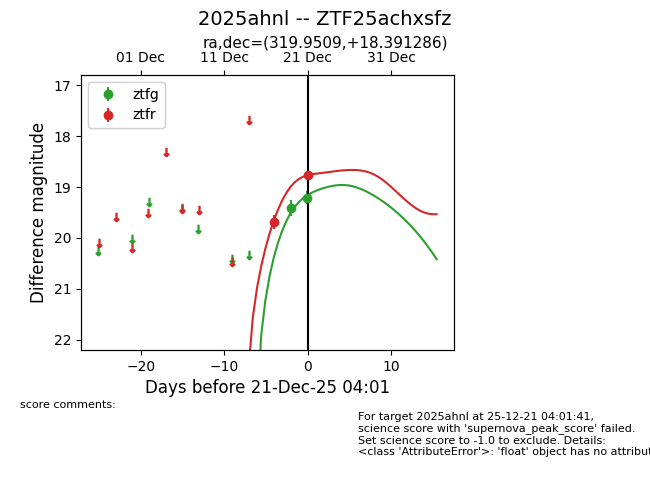
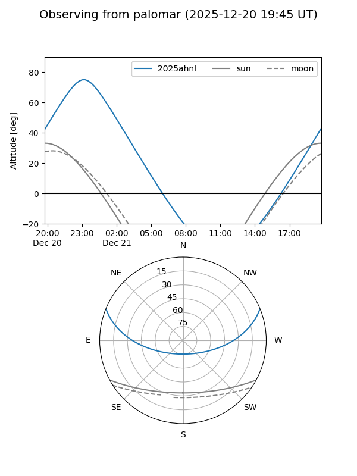

2025ahnl
Target 2025ahnl at 2026-01-09 12:49
Aliases and brokers:
FINK: link
Lasair: link
ALeRCE: link
TNS: link
YSE: link
alt names
ZTF25achxsfz (ztf,fink_ztf)
2025ahnl (tns,yse)
Coordinates:
equatorial (ra, dec) = 319.9509,+18.39129
equatorial (HMS+DMS) = 21:19:48.23,+18:23:28.63
galactic (l, b) = (68.5238,-21.43605)
Flags:
Photometry:
last ztfg=19.21, ztfr=18.76
2 ztfg, 3 ztfr detections
Lightcurve

Visibility


Additional plots